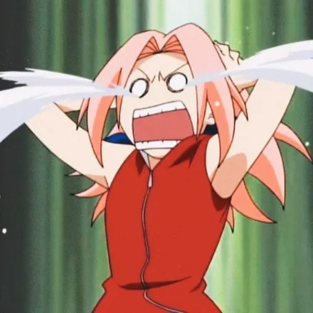

Hidden Leaf Dev Team
Naruto Edition
Master Docker
with real-world
examples
Learn with Naruto's team. Real apps, practical labs, and every command explained — from your first container onward.
20 lessonsDocker + Compose
100%Free to read
Hands-onMission based
Created byNirmal Kharal
Docker · Compose · Recovery · Secure delivery.
No login required. Optional AI. Choose Prisma or Drizzle.